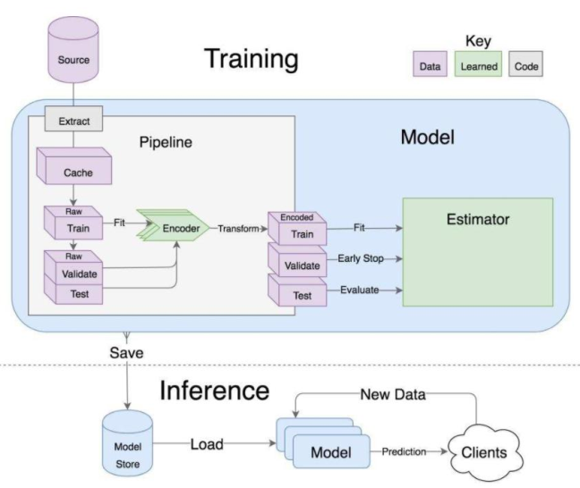
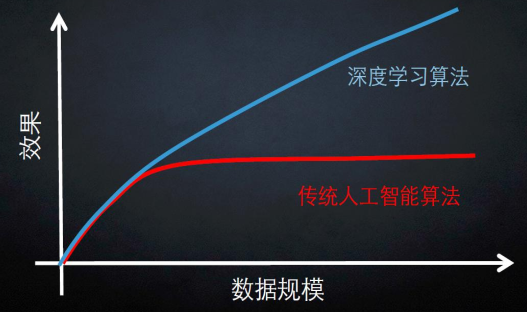
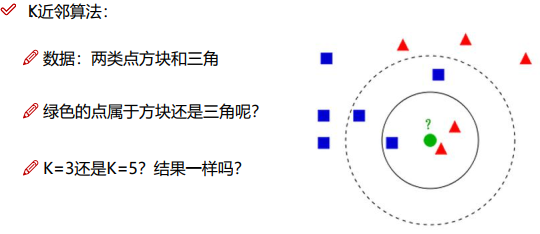
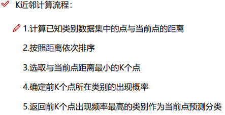
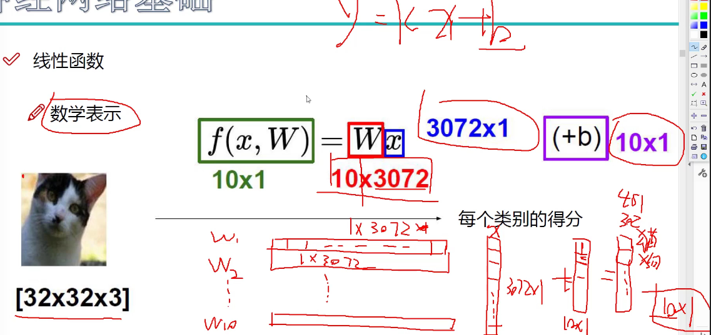
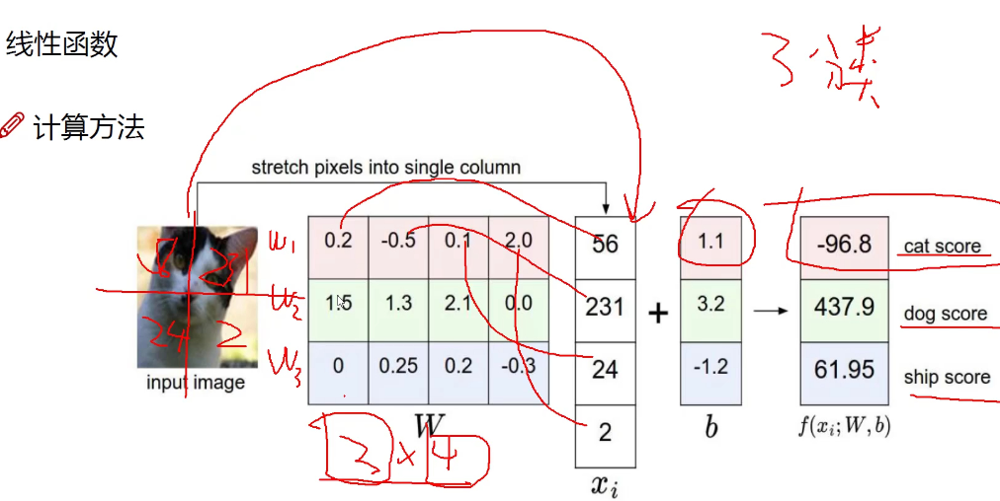
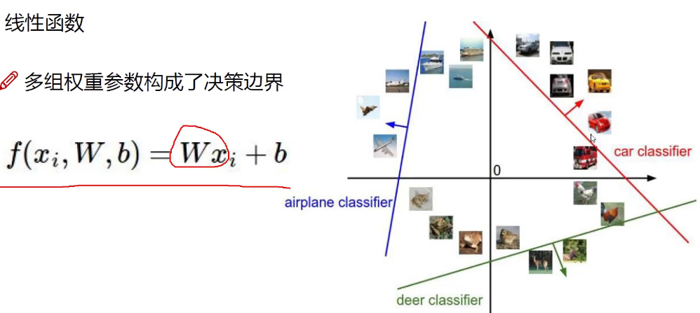
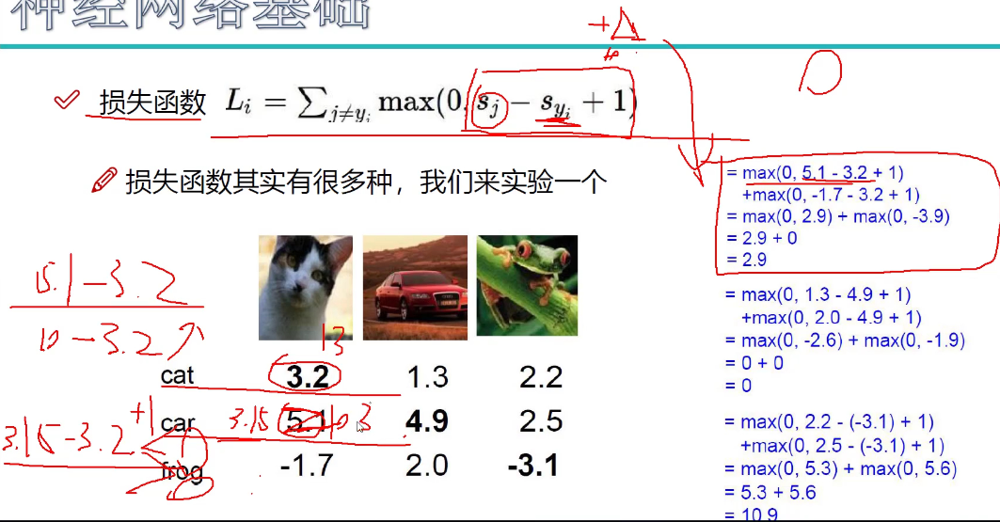

Referenece: csdn 深度学习入门视频课程
# 机器学习流程

数据获取，特征工程，建立模型，评估与应用
深度学习是一个黑盒子但是也要了解里面细节.
# 数据集
01. 大数据集
2009 年之前机器学习耗费资源多，速度慢，交流关注的少.
2009 年 李飞飞号召全美多所高校标注图片中物体特征位置，组成一个含有 22K 个种类和 14M 张图片的库.
http://www.image-net.org/
图片库非常大，做大型科研等可以参考.
2012 年 Alex 在图像分类比赛中使用深度学习算法获得冠军，精度比第二名用传统人工智能得到的精度高出十几个百分点，由此让人们意识到深度学习在计算机视觉方面的重要作用.
2017 年李飞飞宣布图像分类比赛结束，因为机器识别效果远超人类，比赛再做下去没有多大意义.

在数据规模比较小是可以不用深度学习.
当数据规模达到上万或几十万量时候深度学习效果比传统人工智能好.
02 小数据集CIFAR-10 百度，google 等搜索下载
# K 近邻算法


K 近邻算法对测试的用的 image A 和图片集中的 images B,c,d..., 像素点的值对应位相减，再求和得到两张图片总像素点的差值和.
再取图片集前 10 个差值小的图片，会发现跟测试用的 image A 内容可能相差很大，只是背景或前景色相类似.
因此 K 近邻算法不能用来图像分类，需要再画出图片中感兴趣的区域再识别.
# 线性函数



# 损失函数

错误得分 - 正确得分，再 +1 或者 + 10 (表示正确得分要比错误得分高 1 或者 10 才算没有损失), 再跟 0 比大小取大值，小于等于 0 表示没有损失.